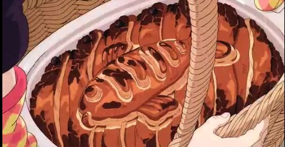

Herring and Pumkin Pot Pie

The highly regarded Studio Ghibli film Kiki's Delivery Service is a coming-of-age story filled with delicious- looking food. Rest assured; the pie being ill received by one of the characters is merely a plot point to expand on the theme of self-acceptance.
Many have found the white fish baked in a creamy bechamel sauce layered with cheese and puff pastry to be a tasty addition to their fall baking repertoire.
Prep Time: 45 min
Cook Time: 30 min
Total Time: 1 hr 15 min
Ingredients
- 1/2 kabocha, or 1 can pumkin (approx 3/4 lbs)
- 1/2 onion diced
- 1 tbsp olive oil
- 1 can herring
- 1-2 puff pastry sheets frozen or homemade
- black olives cut
- salt & pepper
- shredded white cheese (any white cheese)
Bechamel Sauce
- 2 tbsp butter
- 2 tbsp flour
- 1 1/4 cup hot milk
- salt & pepper
Egg Wash
Instructions
- Scoop out the seeds from the kabocha.
- Cut the kabocha into smaller pieces. Steam until softened (about 15 minutes).
- Remove the skin of the kabocha. Place kabocha pieces into a medium sized bowl.
- Finely chop the onion. In a medium pan, heat oil on medium. Cook the onions until translucent.
- Add the onion to the kabocha and mix, while making sure to break up the kabocha well.
Start on the bechamel sauce:
- In a small saucepan, heat the butter on medium-low heat.
- Once melted, whisk in 2 tbsp flour until it bubbles (make sure not to burn it).
- Take your hot milk and pour it in and continue to whisk.
- Add salt and pepper to taste and whisk until the sauce thickens.
Back to the pot pie:
- Add the bechamel sauce to the kabocha mixture in the bowl. Mix well – until creamy.
- Add salt & pepper to taste.
- Transfer the mixture into a casserole dish.
- Open up the canned herring and place on top of the kabocha mixture.
- Place shredded white cheese or grate white cheese on top of the herring.
- Prep a sheet of puff pastry dough. This can be pre-made or you can make it from scratch.
- Place a thin sheet of puff pastry dough over to cover the casserole. You can cut it to fit the casserole or let it hang over the edges.
- Using another sheet of puff pastry dough, cut out the fish design and place it on top of the casserole.
- Mix your egg wash ingredients. Put egg wash onto the dough, being careful not to create any pools.
- Place cut olives around the edge of the dish.
- Preheat the oven to 375 degrees F. Bake the pot pie for 25-30 minutes.
- Enjoy!
See the original recipe here!